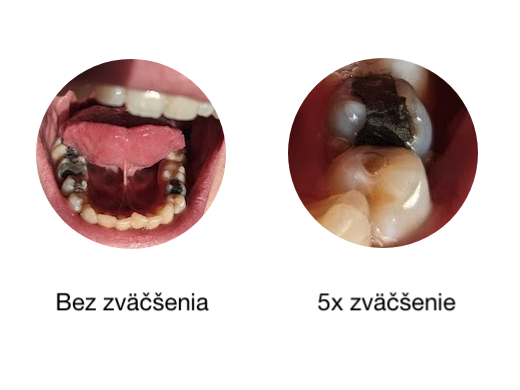

AnDental
MDDr. Katarína Antalová
MDDr. Juraj Medveď
Zubný lekár v Bratislave
Poskytujeme služby v oblastiach preventívna stomatológia, záchovná stomatológia, endodoncia, chirurgia, dentálna hygiena, protetika a parodentológia
Pri práci používamé najnovšie trendy a kvalitné materiály. Samozrejmosťou pri ošetrení je práca pod zväčšením a kofferdam
Aktuality
2. Sep 2024
V ambulancii Vás od septembra a počas materskej dovolenky ošetrí aj pán zubár MDDr. Juraj Medveď. Môžete sa objednať.
21. Aug 2024
Dovolenka: V dňoch 24.8. - 1.9. máme v ambulancii zatvorené. V tom čase prosím využite možnosť online rezervácie.
20. Jún 2024
Dovolenka: V dňoch 25.6. - 30.6. máme v ambulancii zatvorené. V tom čase prosím využite možnosť online rezervácie.
19. Apr 2024
Dovolenka: V dňoch 22.4. - 23.4. máme v ambulancii zatvorené. V tom čase prosím využite možnosť online rezervácie.
20. Dec 2023
V dňoch 22.12. - 1.1. máme v ambulancii zatvorené. V tom čase sa môžete objednať na vyšetrenie online.
18. Aug 2023
Od septembra Vás po návrate z materskej dovolenky ošetrí pani zubárka MDDr. Katarína Antalová. Môžete sa objednať.
18. Aug 2023
Dovolenka: V dňoch 28.8. - 1.9. máme v ambulancii zatvorené. V tom čase prosím využite možnosť online rezervácie.
2. Jún 2023
Dovolenka: V dňoch 5.6. - 12.6. máme v ambulancii zatvorené. V tom čase prosím využite možnosť online rezervácie.
20. Dec 2022
V dňoch 22.12. - 27.12. máme v ambulancii zatvorené. V tom čase sa môžete objednať na vyšetrenie online.
29. Sep 2022
Zmena ordinačných hodín: od októbra ordinujeme pondelok - štvrtok od 8:00 do 16:00. Môžete sa objednať.
5. Sep 2022
V ambulancii Vás od septembra a počas materskej dovolenky ošetrí aj pani zubárka MDDr. Lenka Mandráková. Môžete sa objednať.
26. Aug 2022
Dovolenka: V dňoch 26.8. - 4.9. máme v ambulancii zatvorené. V tom čase prosím využite možnosť online rezervácie.
22. Jún 2022
Dovolenka: V dňoch 22.6. - 26.6. máme v ambulancii zatvorené. V tom čase prosím využite možnosť online rezervácie.
26. Feb 2022

V ambulancii sme vymenili stroj a kreslo za úplne nové slovenskej značky Chirana CHEESE EASY. Môžete sa objednať na vyšetrenie.
1. Okt 2021
Od dnes poskytujeme služby bielenia zubov pomocou namieru vytvorených nosičov a domácej sady.
18. Aug 2021
Dovolenka: V dňoch 18.8. - 20.8. a 27.8.-1.9. máme zatvorené.
10. Máj 2021
Pri práci používame stomatologické lupy vďaka ktorým vidíme ešte viac detailov a poskytujeme kvalitnejšie ošetrenie.
31. Dec 2020
Priniesli sme do ambulancie trochu umenia v podobe grafík!
17. Dec 2020
Ambulancia je otvorená aj počas Lock Downu cez Vianoce, možete sa objednať na vyšetrenie.
8. Dec 2020
Počas návštevy v našej ambulancii si môžete prečítať aj aktuálne vydanie Denníka N!
13. Nov 2020
Od dnes u nás môžete platiť aj bezkontaktne platobnou kartou!
6. Nov 2020
Máme otvorené po rekonštrukcii v priestoroch po MUDr. Paukovicovej. Rezervujte si termín Vášho vyšetrenia: 02/442 545 03
Referencie


AnDental, s.r.o. Račianska 66, 831 02 Bratislava IČO: 53075331, DIČ: 2121263606, IČ DPH: SK2121263606
© Copyright